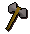
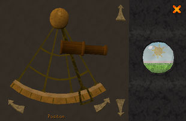

")
Schatzsuche
Einführung | Lage | Voraussetzungen | Empfohlene Ausrüstung
Auf der Suche | Belohnungen | Entwicklung
Auf der Suche | Belohnungen | Entwicklung
Nur RuneScape-Mitglieder haben Zugang zu diesem Zwischendurch-Ereignis. Wenn ihr euch anmeldet, könnt auch ihr dieses Feature nutzen.
Bitte beachtet, dass es sich hierbei um ein 'gefährliches' Ereignis handelt. Falls ihr dabei sterbt, werdet ihr eure Gegenstände verlieren.
Einführung

Wenn ihr eine Hinweis-Schriftrolle erhalten habt, könnt ihr sie lesen, indem ihr auf sie links- oder rechtsklickt und dann die Option 'Lesen' auswählt. Eine neue Hinweis-Schriftrolle erhaltet ihr erst, wenn ihr keine mehr in eurem Bankschließfach oder in eurem Inventar habt.
Es gibt drei verschiedene Schwierigkeitsgrade für die Hinweis-Schriftrollen: niedrig- (1), mittel- (2) und hochstufig (3). Wenn ihr gerade erst anfangt, solltet ihr euch auf niedrigstufige NSCs konzentrieren. Diese lassen Hinweis-Schriftrollen der Stufe 1 fallen, höherstufige NSCs hingegen lassen auch höherstufige Schriftrollen fallen (das hängt davon ab, welche NSCs ihr bekämpft). In der folgenden Tabelle erhaltet ihr eine Übersicht über eine Auswahl von NSCs, von denen man die Hinweis-Schriftrollen der verschiedenen Stufen erhält.
In dieser Liste sind nicht alle NSCs aufgeführt, die Hinweis-Schriftrollen fallen lassen.
| Stufe | NSC | Lage |
| 1 | Männer | Überall auf RuneScape |
| Goblins | Goblindorf, Goblinhöhle, Sumpf von Lumbridge | |
| Barbaren | Barbarendorf | |
| Bauern | An verschiedenen Orten | |
| Al-Kharid-Krieger | Palast von Al-Kharid | |
| MGB-Mitglied | MGB-Höhle | |
| Muskelprotze | Wildnis und Varrock | |
| Diebe | Varrock |
| Stufe | NSC | Lage |
| 2 | Wachen | In den meisten größeren Städten |
| Stammesangehörige | Karamja-Dschungel | |
| Dschoger | Karamja-Dschungel | |
| Eiskrieger | Blurit-Mine | |
| Paladine | Ardougne |
| Stufe | NSC | Lage |
| 3 | Wackelpeter | Verlies der Berserker |
| Gründrachen | Wildnis | |
| Blutdämonen | Wildnis und Verlies auf Entrana | |
| Blaudrachen | Verlies von Taverley und die Gilde der Helden | |
| Höllenhunde | Mine für perfektes Gold und Verlies von Taverley | |
| Rotdrachen | Wildnis | |
| Schwarzdrachen | Verlies von Taverley und Wildnis |
Bitte vergesst nicht, dass es passieren kann, dass ihr viele dieser NSCs besiegt, ohne auch nur eine einzige Hinweis-Schriftrolle zu erhalten. Das liegt daran, dass die Wahrscheinlichkeit, eine zu bekommen, ganz dem Zufall überlassen ist. Es kann sein, dass ihr mehrere Hinweise verfolgen müsst, bis ihr zu eurem Schatz kommt. Das hängt von der Stufe der Hinweis-Schriftrolle ab, die ihr gerade zu lösen versucht.
Lage
Die Schatzsuche kann euch zu allen Orten auf RuneScape führen. Es gibt keine Möglichkeit abzuschätzen, wo ihr hinmüsst oder wie lange ihr braucht, bis ihr den nächsten Hinweis erhaltet.
Voraussetzungen
Es gibt keine direkten Voraussetzungen für die Schatzsuche. Wenn ihr aber versucht, eine Hinweis-Schriftrolle der Stufe 3 zu erhalten, benötigt ihr eine hohe Kampfstufe, um NSCs zu besiegen, die diese fallen lassen. Wenn ihr die Hinweis-Schriftrolle erst mal habt, ist davon auszugehen, dass eine solche hochstufige Schriftrolle euch durch Gegenden führen wird, in denen ihr Essen dabei haben müsst, das viele Trefferpunkte wiederherstellt.
Empfohlene Gegenstände
Es gibt verschiedene Arten von Hinweis-Schriftrollen. Für manche müsst ihr eure grauen Zellen anstrengen oder an einen bestimmten Ort reisen. Einige Gegenstände werdet ihr benötigen, um auf Schatzsuche zu gehen.
| Benötigte Gegenstände | Hier erhältlich | Nutzen bei der Schatzsuche |
![[Bild]](../../img/main/kbase/items/books_and_docs/clue_scroll.gif) Hinweis- Hinweis-Schriftrolle |
Dieser Gegenstand wird von NSCs fallen gelassen. | Wird benötigt, um herauszufinden, wo sich der nächste Hinweis oder Schatz befindet. |
![[Bild]](../../img/main/kbase/items/misc/watch.gif) Uhr Uhr |
Um eine Uhr zu bekommen, müsst ihr zur Turmuhr südlich von Ardougne gehen und mit Bruder Kojo sprechen. | Wird zum Lösen von Koordinaten-Hinweisen benötigt. |
![[Bild]](../../img/main/kbase/items/misc/sextant.gif) Sextant Sextant |
Diesen Gegenstand erhaltet ihr, wenn ihr mit Murphy sprecht, dem Kapitän des Trawlers. Zuerst müsst ihr allerdings mit dem Observatoriumsprofessor sprechen, der euch dann informiert, dass ihr einen Sextanten benötigt. | Wird zum Lösen von Koordinaten-Hinweisen benötigt. |
![[Bild]](../../img/main/kbase/items/books_and_docs/chart.gif) Karte Karte |
Wenn ihr den Sextanten und die Uhr habt, geht zurück zum Observatoriumsprofessor und er wird euch die Karte geben. | Wird zum Lösen von Koordinaten-Hinweisen benötigt. |
Für manche Hinweis-Schriftrollen ist mehr erforderlich, als nur eine Rätsel-Kiste zu vervollständigen oder ein Rätsel zu lösen. Für solche Hinweis-Schriftrollen benötigt ihr vielleicht ein paar weitere Gegenstände (nicht alle in der Tabelle aufgeführten Dinge sind notwendig, aber sie könnten nützlich sein):
| Zusätzliche Gegenstände | Hier erhältlich | Nutzen bei der Schatzsuche |
![[Bild]](../../img/main/kbase/items/tools/spade.gif) Spaten Spaten |
Diesen Gegenstand kann man von vielen Gärtnern in der Nähe von Parzellen erhalten. Man kann ihn auch in einigen Gemischtwarenläden kaufen. | Nötig, um den nächsten Hinweis oder Schatz auszugraben. |
![[Bild]](../../img/main/kbase/items/misc/climbing_rope.gif) Seil Seil |
Diesen Gegenstand kann man in vielen Gemischtwarenläden kaufen oder man kann ihn sich (gegen ein Entgeld) anfertigen lassen, indem man Ned in Dorf Draynor Wolle bringt. | Könnte benötigt werden, wenn ihr für euren Hinweis in eine Höhle hinabsteigen müsst, die man nur mithilfe eines Seils betreten kann. |
![[Bild]](../../img/main/kbase/items/runes/lrune.gif) Runen Runen |
Runen könnt ihr in Läden kaufen, selbst herstellen oder als Belohnung für das Töten von Monstern erhalten. | Könnten sich als nützlich erweisen, wenn ihr weite Entfernungen überwinden müsst und Teleportmöglichkeiten benötigt. |
![[Bild]](../../img/main/kbase/items/amulets/glory_amulet.gif) Teleport-Schmuck Teleport-Schmuck |
Manche dieser Gegenstände können von Spielern angefertigt werden oder sie sind Belohnungen für das Beenden von Abenteuern. Um mehr Informationen über Teleporte zu erhalten, schaut euch den Abschnitt Teleportzauber in der Spielanleitung an. | Dieser Schmuck ist für große Entfernungen nützlich - so könnt ihr viel Zeit sparen, wenn ihr den nächsten Hinweis sucht. |
![[Bild]](../../img/main/kbase/items/food/baked/apple_pie.gif) Nahrung Nahrung |
Nahrung erhält man, indem man fischt, Tiere erlegt, seine Fertigkeit Kochen benutzt oder sie in Läden bzw. von anderen Spielern kauft. | Es kann sein, dass ihr für eure Hinweise weit und durch gefährliche Gegenden reisen müsst. Deshalb solltet ihr unbedingt Nahrung mitnehmen, vor allem, wenn es sich um eine Hinweis-Schriftrolle der Stufe 3 handelt. |
| Waffen | Erhältlich in vielen Läden, werden von Monstern fallen gelassen und können mit anderen Spielern getauscht werden. | Wenn ihr einem hochstufigen Hinweis nachgeht, müsst ihr durch gefährliche Gegenden reisen, also ist es wichtig, dass ihr eine Waffe habt, um euch zu verteidigen. |
Auf der Suche
Beim Lösen von Hinweis-Schriftrollen kann es sein, dass ihr euch auf äußerst lange Expeditionen begeben müsst. Deshalb ist es wichtig, dass ihr alle Abkürzungen, die euch zur Verfügung stehen und alle Reisemöglichkeiten nutzt. So könnt ihr Zeit sparen, wenn es darum geht, zu der Stelle zu kommen, an dem sich der Schatz oder der nächste Hinweis befindet. Um zu erfahren, wie ihr euch auf RuneScape fortbewegen könnt, lest euch bitte unseren Artikel Reisemöglichkeiten durch.
Arten der Hinweis-Schriftrollen
Es gibt verschiedene Arten von Hinweis-Schriftrollen, die ihr auf eurer Schatzsuche findet:- Sprecht mit einem NSC
- Anschauen / Durchsuchen
- Rätsel
- Karten
- Rätsel-Kisten
- Koordinaten
- Anagramme
- Gesten
Sprecht mit einem NSC
Manche Hinweise führen euch zu Gebäuden oder einem NSC, wo ihr mehr Informationen zu eurer Schatzsuche erhaltet. Um mit einem NSC zu sprechen, müsst ihr ihn natürlich zuerst finden. NSCs könnten sich beispielsweise in einem Haus in Yanille oder im Mort-Myre-Sumpf in Morytania befinden, also solltet ihr eine genaue Vorstellung davon haben, wo sie sich aufhalten, um nicht allzu viel Zeit bei der Suche zu verschwenden.
Anschauen / Durchsuchen
Für diese Art von Hinweisen müsst ihr zu einem Ort gehen und möglicherweise ein Haus oder einen Gegenstand wie eine Truhe durchsuchen, um euren nächsten Hinweis zu finden.
Rätsel
Wenn ihr die neue Ortsangabe von eurem letzten Hinweis entschlüsselt habt, merkt ihr vielleicht, dass ihr für euren nächsten Hinweis ein Rätsel lösen müsst. Für Rätsel gibt es immer eine einfache Antwort, aber sie ist oft schlau und lustig verpackt, sodass ihr eure grauen Zellen etwas anstrengen müsst, um auf die Lösung zu kommen. Die Antwort für das unten aufgeführte Rätsel geben wir mit Absicht nicht an, da ihr dieses vielleicht selbst in einer Hinweis-Schriftrolle erhaltet.
Beispiel für eine Rätsel-Schriftrolle:
46 ist meine Zahl, mein Körper, von rostroter Farbe, gesellt sich zu den Achtfüßlern. Drei Münder hab ich, doch esse nichts. Ich liege unter einem blauen Auge!
Karten
Auf diesen Hinweisen sind bestimmte Orte oder Gegenden abgebildet. Mithilfe der Weltkarte könnt ihr herausfinden, um welchen Ort es sich handelt und dann dorthin reisen.
Auf der Karte befindet sich entweder ein 'X', das euch zeigt, wo ihr nachschauen oder graben müsst, oder eine Kiste. Letzteres bedeutet, dass ihr Holzcontainer oder Kisten an diesem Ort durchsuchen müsst, um euren nächsten Hinweis oder den Schatz zu finden. Auf manchen Hinweis-Schriftrollen befinden sich sowohl ein X als auch eine Kiste.
Es gibt drei verschiedene Schwierigkeitsgrade für die Karten, die ihr erhalten könnt: einfach, mittelschwer und schwierig.
Rätsel-Kisten
Diese Hinweise sind nicht allzu schwierig. Wenn ihr eine Hinweis-Schriftrolle erhalten habt, sollt ihr zu einem bestimmten NSC gehen. Der NSC wird euch dann eine Rätsel-Kiste geben (Beispiele seht ihr unten). Ihr müsst die einzelnen Felder dann so verschieben, dass sie ein richtiges Bild ergeben. Wenn ihr die Rästel-Kiste gelöst habt, sprecht einfach noch mal mit dem NSC, der sie euch gegeben hatte. Wenn ihr die fertige Rätsel-Kiste in eurem Inventar habt, werdet ihr eine Belohnung erhalten. Unten seht ihr ein paar Lösung zu bekannten Rätsel-Kisten.
| Rätsel-Kisten | Lösung | |
![[Bild]](../../img/main/kbase/minigames/trails/puzzle1_mixed.gif) |
![[Bild]](../../img/main/kbase/minigames/trails/puzzle1_complete.gif) |
|
![[Bild]](../../img/main/kbase/minigames/trails/puzzle2_mixed.gif) |
![[Bild]](../../img/main/kbase/minigames/trails/puzzle2_complete.gif) |
|
![[Bild]](../../img/main/kbase/minigames/trails/puzzle3_mixed.gif) |
![[Bild]](../../img/main/kbase/minigames/trails/puzzle3_complete.gif) |
Koordinaten

Es ist gar nicht so schwierig, den Ort mithilfe der Koordinaten zu finden - ihr müsst nur das Observatorium (südwestlich von Ardougne) besuchen und den Professor bitten, euch beizubringen, wie man navigiert.
Um Koordinaten-Hinweise zu lösen, benötigt ihr einen Sextanten, um die Koordinaten von eurem Aufenthaltsort zu bestimmen. Der Observatoriumsprofessor kann euch einen Sextanten geben. Um ihn zu benutzten, müsst ihr nur auf ihn links- oder rechtsklicken und dann die Option 'Durchschauen' auswählen.

Vergleicht eure eigenen mit den Koordinaten auf der Hinweis-Schriftrolle, sodass ihr wisst, ob ihr nach Norden, Süden, Osten oder Westen gehen müsst, um euren Schatz zu finden.
Magier
Wenn ihr die Koordinaten einer hochstufigen Hinweis-Schriftrolle verfolgt, könnte es passieren, dass ein Magier euch den Weg zu dem vergrabenen Schatz blockiert. Wenn euer Hinweis zu einem Ort in der Wildnis führt, nehmt euch in Acht vor Magiern von Zamorak. Auf dem Rest des Kontinents solltet ihr euch vor Magiern von Saradomin hüten. Holzauge, sei wachsam! Seid bereit, euch zu verteidigen!
Anagramme
Bei solchen Hinweisen müsst ihr die Anordnung der Buchstaben verändern, sodass sie ein anderes Wort ergeben. Das Wort, das dann entsteht, ist der Name eines NSC. Ihr müsst dann zu dieser Person gehen, um euren nächsten Hinweis oder euren Schatz zu erhalten.
Zum Beispiel: El Ow
Gesten
Gesten-Hinweise sind ähnlich wie Spionage. Ihr müsst zu einem bestimmten Ort gehen, dort bestimmte Kleidung tragen und dann eine Geste ausführen.
Wenn ihr den Anweisungen genau folgt, wird Uri erscheinen, von dem ihr eure Belohnung erhaltet. Aber Vorsicht! Bei hochstufigen Hinweis-Schriftrollen kann es passieren, dass ein Doppelagent erscheint, den ihr töten müsst, damit Uri dann kommt.
Unten in der Tabelle sind Gegenstände aufgelistet, die für bestimmte Hinweis-Schriftrollen nützlich sein könnten. In den Tabellen weiter oben in diesem Artikel könnt ihr nachschauen, wo ihr diese Gegenstände herbekommt und wie sie euch bei eurer Schatzsuche helfen können.
| Art des Hinweises | Empfohlene Gegenstände | |||||||
| Sprecht mit einem NSC | |
|
||||||
| Anschauen / Durchsuchen | |
|
||||||
| Karten | |
|
|
|
||||
| Koordinaten | |
|
|
|
|
|||
Entwicklung
Entwicklung: Jon S, Tony W
Grafik: Grafikteam
Qualitätssicherung: Andy C
Audio: Ian T

Weitere Artikel in Spaß für zwischendurch
|
|
|
Weiterführende Informationen Wenn euch dieser Artikel nicht weitergeholfen hat, könnt ihr in den folgenden Kapiteln der RuneScape-Webseite mehr Informationen finden:
|
|